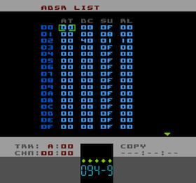
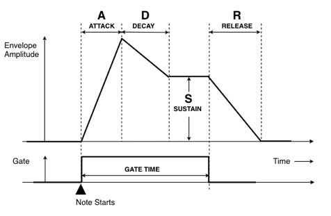

Envelope (ADSR) List Page
Tracks A, B and D are able to use an ADSR Envelope to shape the amplitude of the sound. There's a handy diagram at the bottom of the page which might help if you're unsure of what an ADSR envelope does.
Unlike pages such as Chain and Pattern Editor (and Instrument) where one object at a time is presented on screen, the ADSR List page is one of the pages that presents several objects in a list-form.
This means that the numbers running down the left-hand side of the screen are the Envelope numbers that you specify in an Instrument or Command and that each row is an entire Envelope object made up of, in this case, four individual parameters.
From left-to-right those parameters are:
|
specifies the Attack speed for the Envelope. This is the time taken for the amplitude to go from 00 to maximum |
|
specifies the Decay speed for the Envelope. This is the time taken for the amplitude to go from maximum |
|
specifies the Sustain Level for the Envelope. This is the level at which the amplitude is held until the Release phase. The time component of Sustain is controlled by the Gate Time parameter of the Instrument or by the Kill command (Kxx) |
|
specifies the Release speed for the Envelope. This is the time taken for the amplitude to go from the Sustain Level to zero. The Release phase is triggered either after the Gate Time has expired (set in Instrument) or if a Kill command (Kxx) is used while a note is active |
00 to 0F, with 00 being silent and 0F being the maximum output volume. However, because Pulsar has a LEVEL parameter (set in Instruments or by the Output command, Oxx), the maximum amplitude that the ADSR is scaled by this setting and therefore may not necessarily be 0F.
PARAMETER SETTINGS
For Attack (AT), Decay (DC) and Release (RL), 01 is the slowest speed and FF is the fastest. The Sustain (SU) parameter range is 00 to 0F.
SPECIAL SETTINGS
If you specify 00 for the Attack (AT) parameter, the amplitude will start at maximum and at the Decay phase.
If you speficy 00 for the Decay (DC) parameter, the Decay phase will be skipped and the amplitude will start at the Sustain Level.
You can specify 00 for the Sustain Level. In this case the Envelope will effectively end after the Decay phase.
If you specify 00 for the Release (RL) parameter, when the Gate Time ends or a note is Kill-ed (Kxx) the output will be silenced immediately.
ADSR Diagram
Shamelessly copied from a really great diagram on Audiomulch website.
{kind=link}
I included this as I thought it showed the relationship between all the parameters really clearly and in an understandable way.
